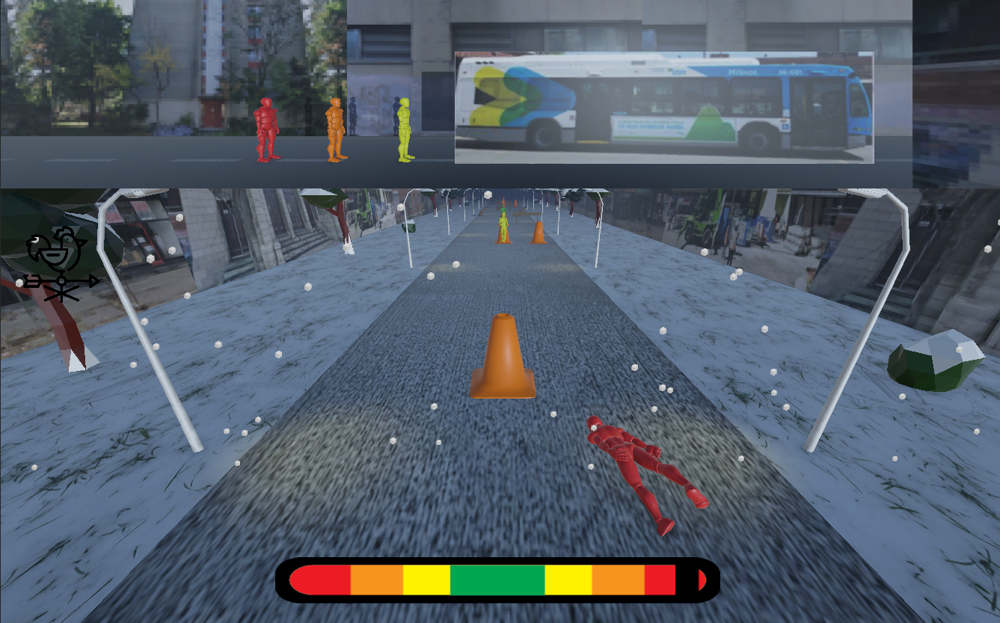
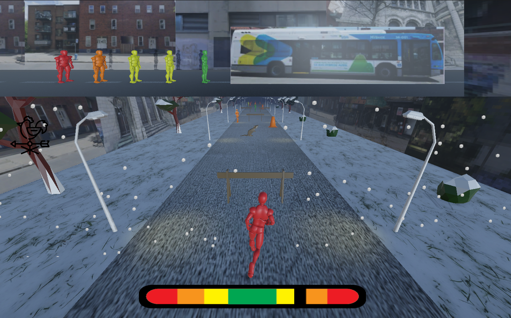

2025 / Video Game
I Can Make It
A short game about sprinting for the bus before it leaves. Move fast, dodge obstacles, and maybe make it on time.
- Unity
- Illustrator
- Blender

Overview
Project description
I Can Make It is a vignette game built around a familiar, slightly desperate situation: running for the bus just before it leaves. The project leans into a deliberately janky, funny tone while exploring game feel and interaction design.
Most of the 3D assets come from the Unity Asset Store. I designed the UI in Illustrator and Photoshop, and the images on the walls are pulled from Google Images of streets near the bus stop I usually run to. The obstacles are Montreal-specific, including construction cones and city rats, and each level is scored with fast waltz music.
Media Gallery
Images and video documentation from the project folder.


Project Files